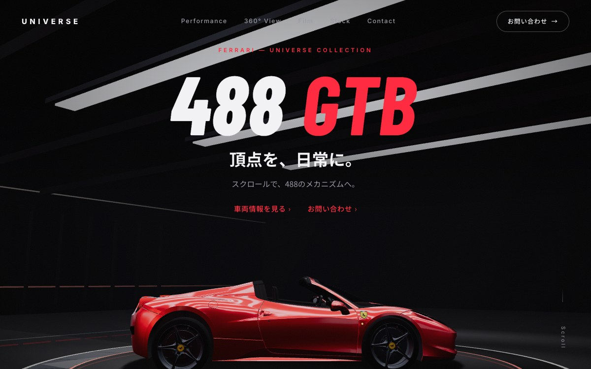
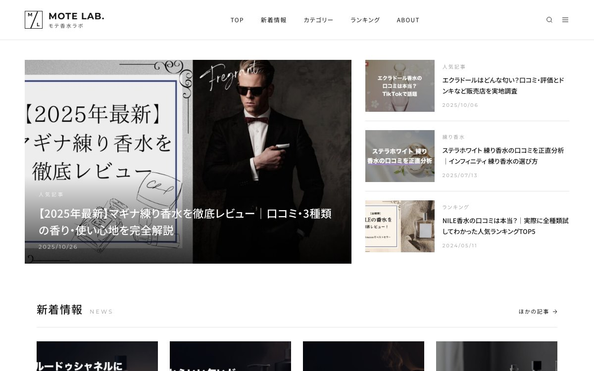
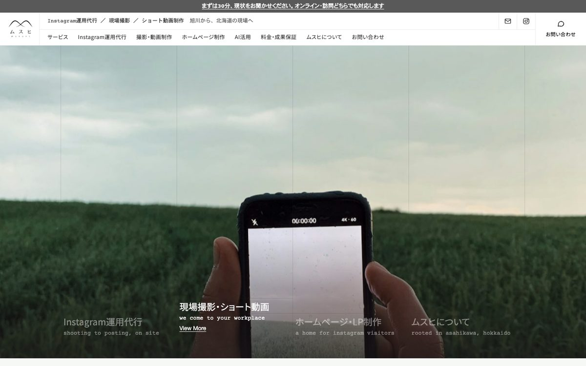
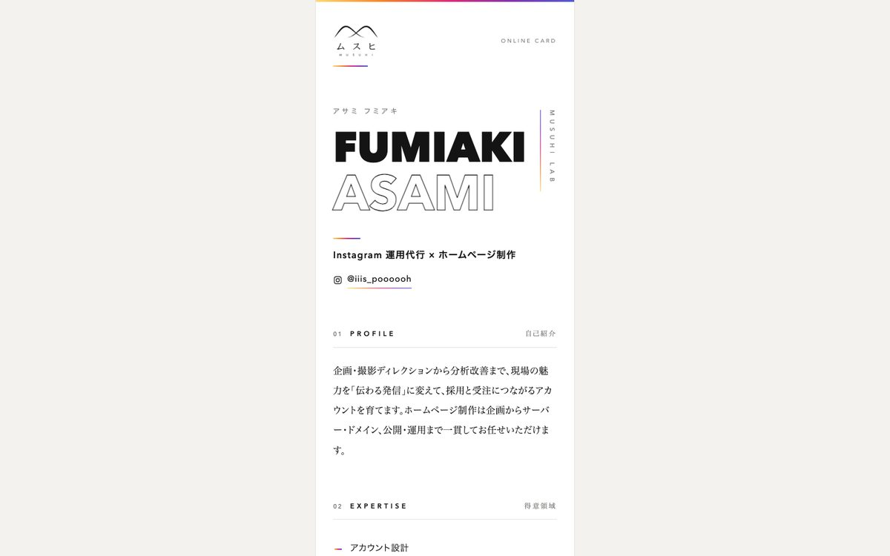

Policy 01
見た人が、次の行動を取れる
電話・問い合わせ・地図・営業時間は、探させないところに置きます。1画面目で「何をしている会社か」と「どこにあるか」が分かること。まずそこを最優先にします。
ホームページ・LP制作 ／ Instagram運用の受け皿
SNSで見つけた人が、最後に見に来る場所を整える。
リールを見て、プロフィールをのぞいて、それから会社のページを開く。その最後の一歩で手が止まらないように、1画面目から問い合わせまでをひと続きにします。Instagram運用を担当する代表が、そのままサイトも設計して作ります。
Free Consultation
スマートフォンでサイトを開いて、1画面目・問い合わせ導線・最終更新日の3点をその場で確認します。サイトがまだ無ければ、Instagramだけでも構いません。その場でのご契約はお願いしません。
無料相談はこちらWorks
実際に作って公開しているサイトです。設計・文章・デザイン・コーディング・公開まで一貫して担当しました。リンク先で実物をご覧ください。

FERRARI 488 GTB ｜ UNIVERSE
中古車1台の販売ページ。スクロールで走行性能・360°ビュー・動画・在庫へ。黒地に赤の一点で見せる作り。
サイトを見る
モテ香水ラボ ｜ MOTE LAB.
年間3.5万人が訪れる、香水の口コミ・比較メディア。レビュー・シーン別ガイド・ランキングを記事カードで回遊させる作り。
サイトを見る
ムスヒ 会社サイト
このサイトです。写真1画面のトップから、サービス・料金・問い合わせまで。
サイトを見る
オンライン名刺
名刺のQRから開く1ページ。プロフィール・できること・連絡先をスマホ幅で。
サイトを見るGap
どちらも悪くないのに、繋ぎ目だけが誰の担当でもなくなっていることがあります。サイトがまだ無い場合は、そもそもリンクの先がありません。
投稿は毎週更新しているのに、プロフィールのURLが指す先だけが止まっている。Instagramのプロフィールに置けるリンクは限られていて、その1本が古いページへ人を送ってしまいます。
会社の説明は載っているのに、問い合わせ先も営業時間も場所もすぐに見つからない。判断に使う材料が探さないと出てこないと、「よさそう」で止まって、そのまま閉じられます。
現場の写真で信頼を作った人が、まったく別の雰囲気のページに着く。同じ会社だと分かるまでに、少しだけ時間がかかります。
Position
ムスヒの主力はInstagram運用代行です。プロフィールのリンク、着いた先の1画面目、そこから問い合わせまで。この一続きを設計するのが仕事で、サイトはその最後の一区間にあたります。
作るのは、Instagram運用を担当する代表です。どの投稿が反応されたか、どんな写真から問い合わせが来たかを見ている人間が、そのままサイトの構成と原稿を組みます。運用でご一緒していれば、現場で撮った写真と、投稿で反応のあった言葉をそのまま使えます。

Policy
見た目だけのページは作りません。次の行動と、公開したあとの更新から逆算します。
Policy 01
電話・問い合わせ・地図・営業時間は、探させないところに置きます。1画面目で「何をしている会社か」と「どこにあるか」が分かること。まずそこを最優先にします。
Policy 02
更新できないサイトは、公開した日から古くなっていきます。お知らせ・写真・料金など変わっていくところを、どこまでご自身で直せる形にするか、どこをこちらでお受けするか。作りはじめる前に、ご相談のうえで決めます。
Policy 03
運用代行をご一緒していれば、現場で撮った写真と投稿の言葉が、すでに手元にあります。サイトのためだけに撮り直す手間と費用が、そのぶん出ません。
Service
目的がひとつなら1枚のページ、会社ごと見せるならサイト。どちらも同じ考え方で作ります。いま見ていただいているこのページも、その考え方で作ったものです。
WEBSITE
会社そのものを見てもらう、土台になるサイト。採用の応募者や取引先が確かめにくる場所でもあります。
※ご要望に応じてその他のご支援も可能です
料金：内容に応じて個別にお見積り
LANDING PAGE
商品・求人・催しなど、目的をひとつに絞って問い合わせまで運ぶページ。
※ご要望に応じてその他のご支援も可能です
料金：内容に応じて個別にお見積り
Price
ページ数、原稿と写真をどちらが用意するか、公開後の更新の仕組み。この三つで金額が大きく変わるため、定価を置いていません。
サイト制作は、原則としてInstagram運用とセットでのご相談をお願いしています。ただし、いまのサイトが導線として機能していないだけなら、そこだけ直すご相談も承ります。
Instagram運用代行の月額は、スタート150,000円／グロース250,000円／フルサポート400,000円（いずれも税別）です。詳しくは料金プランをご覧ください。
あわせて、サイトで何をしてほしいか（問い合わせ／採用／商品の紹介）と、公開したい時期を伺います。そのうえでお見積りをお出しします。ご相談とお見積りに費用はかかりません。
Q&A
原則は、Instagram運用とセットでお受けしています。ムスヒがサイトを作っているのは、運用の導線として必要だからです。ただし、いまのサイトが導線として機能していないだけなら、そこだけ直すご相談も承ります。初回相談ではInstagramの状況もあわせて伺い、サイトから手をつけるべきかどうかも含めてご提案します。
足りることもあります。プロフィールと投稿で伝わっていて、DMでそのまま話が進むなら、無理に作る必要はありません。一方で、採用の応募者や取引先の担当者のように、会社概要や所在地まで確かめたい相手には、Instagramだけだと足りないことがあります。どちらなのかは、いまのアカウントを見せていただければ一緒に判断できます。
相談できます。全部作り直さなくても、リンク先と問い合わせ先を整えるだけで足りることもあります。まずは今のページを見せてください。
運用代行をご一緒している場合は、現場で撮った写真をそのままサイトにも使えます。ご用意が難しい場合はご相談ください。どこまでお引き受けできるかを内容を伺ったうえで判断し、お見積りに含めます。
ページ数と、原稿・写真をどちらが用意するかで変わります。初回相談で公開したい時期を伺い、その場で目安の期間をお伝えしたうえで、そこから逆算して日程を決めます。
ご相談ください。どこまでお引き受けできるかは内容によります。どこをご自身で直し、どこをこちらでお受けするかは、作りはじめる前に決めておきます。
Contact
作り直しが要らないこともあります。相談だけでも歓迎です。
内容を確認のうえ、こちらからご連絡します。
Consultation
スマートフォンでいまのページを開いて、1画面目・問い合わせ導線・最終更新日の3点をその場で見ます。オンライン・訪問どちらでも対応します。その場でのご契約はお願いしません。
無料相談はこちら直接メール asamif15@gmail.com ／ 電話 090-6695-7718 ／ Instagram DM @iiis_poooooh